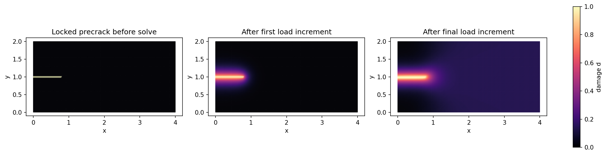
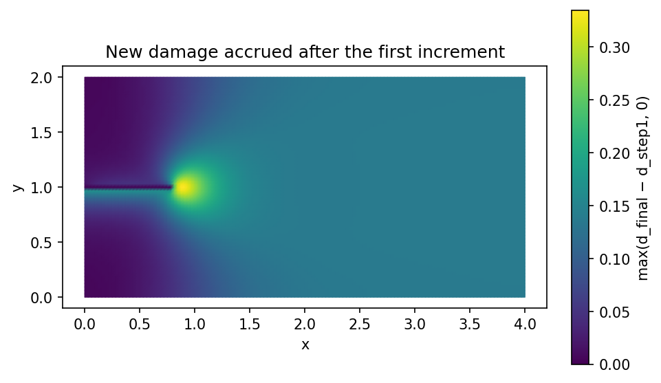
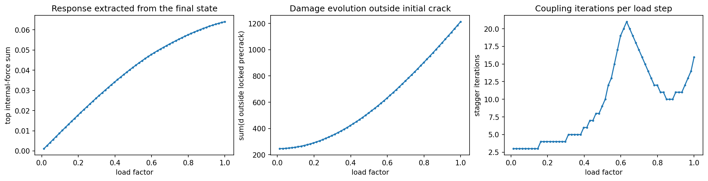

5.8.1. Run and interpret a small PhAST fracture calculation¶
Learning objective. Trace the geometry, T3 mesh, boundary conditions, solver route, and retained evidence for the actual public PhAST AT2 calculation. Separate what this one quasi-static result establishes from claims about physical dynamics or a sharp crack front.
Predict first. Before reading the receipt, predict whether the mesh contains more nodes or elements, and whether a positive change in damage outside the locked notch alone proves a resolved propagating crack front.
Recorded computation: 76.301 seconds on the reference local CPU after setup. This is not a fresh Colab timing.
Read the code and its recorded outputs in order. To change inputs and run Python, download a notebook and use the course environment. The static book does not execute these cells in the browser.
Download practice notebook · Download with worked solutions · Environment setup
This is an actual public PhAST AT2 phase-field solve, run on a CPU with a structured triangular mesh. It makes a rectangle, identifies its boundaries, applies symmetric tension, locks a centreline precrack, and advances sixty quasi-static load increments. It is not a physical-time dynamic simulation and it does not use XFEM.
The execution pin is CEMS-Lab/PhAST@f6324f899f0701769810be117f27f1208f7a582e
(version 0.16.2). The tested local route is source-first import:
PYTHONPATH=<public-PhAST>/src python. The course bundle prefers
vendor/PhAST/src and verifies its manifest if Git metadata is not
present. python -m pip install ./vendor/PhAST is a preparatory
setup option, not part of the recorded notebook timing. The next
cell verifies that the public pin, rather than a neighbouring
private checkout, was imported.
What to look for. d=0 means intact-like and d=1 means
fully broken. The locked centreline is only the initial crack.
The calculation must show a positive increment of damage outside
that set as load increases; otherwise it is a setup check, not the
promised evolving-damage result.
{'course_layout': 'teaching/ukacm_autumn_school_2026 located', 'torch': '2.8.0', 'device': 'cpu', 'dtype': 'torch.float64'}
from day2_helpers import import_public_phast, load_forward_config, run_notched_tension
config = load_forward_config()
phast_info = import_public_phast(config["public_source"]["revision"])
print(phast_info)
print({k: config[k] for k in ("geometry", "mesh", "material", "loading", "solver", "limits")})
{'source': 'vendor/PhAST/src (manifest-verified when vendored)', 'module_file': 'phast/__init__.py', 'revision': 'f6324f899f0701769810be117f27f1208f7a582e', 'version': '0.16.2', 'import_route': 'PYTHONPATH=<public-PhAST>/src', 'verification': 'COURSE_SOURCE_MANIFEST.json hashes verified'}
{'geometry': {'width': 4.0, 'height': 2.0, 'notch_length': 0.8, 'description': 'A rectangular specimen with a centreline phase-field Dirichlet precrack from x=0 to x=notch_length.'}, 'mesh': {'nx': 128, 'ny': 64, 'element_type': 'T3', 'dtype': 'float64'}, 'material': {'E': 1.0, 'nu': 0.3, 'Gc': 0.0005, 'l0': 0.15, 'rho': 1.0, 'energy_split': 'isotropic', 'pf_model': 'AT2', 'eta_residual': 1e-07}, 'loading': {'total_symmetric_vertical_displacement': 0.04, 'n_load_steps': 60, 'first_load_factor': 0.0125, 'last_load_factor': 1.0}, 'solver': {'solver_type': 'quasi_static', 'mechanics_backend': 'scipy', 'damage_preconditioner': 'jacobi', 'use_multigrid': False, 'static_tol': 1e-08, 'static_max_iter': 1000, 'damage_tol': 1e-08, 'damage_max_iter': 1000, 'stagger_tol': 1e-05, 'max_stagger': 200, 'fail_on_mechanics_nonconvergence': True, 'fail_on_stagger_nonconvergence': True}, 'limits': {'solver_seconds_target_low': 60, 'solver_seconds_target_high': 120, 'solver_seconds_hard': 300, 'notebook_seconds_hard': 300}}
5.8.1.1. Geometry, mesh, labelled boundaries, material, and constraints¶
The next cell is the same transparent setup used by the runner.
It first generates the T3 mesh in memory, then saves and reloads a
small prepared tensor-mesh file. This is a recovery/import
route for the course specimen—not a claim that an external mesh
file with physical groups was used. identify_boundaries() makes
the left, right, top, and bottom node labels; the explicit
centreline mask labels the precrack.
from day2_helpers.course_tools import _structured_triangles
from phast.core.mesh import FEMMesh
from phast.physics.boundary_conditions import symmetric_tension_bcs
from phast.physics.material import Material
geometry, mesh_cfg, material_cfg, loading = (
config["geometry"], config["mesh"], config["material"], config["loading"]
)
width, height = geometry["width"], geometry["height"]
x = torch.linspace(0.0, width, mesh_cfg["nx"] + 1, dtype=torch.float64)
y = torch.linspace(0.0, height, mesh_cfg["ny"] + 1, dtype=torch.float64)
xx, yy = torch.meshgrid(x, y, indexing="xy")
nodes_preview = torch.stack((xx.reshape(-1), yy.reshape(-1)), dim=1)
elements_preview = _structured_triangles(mesh_cfg["nx"], mesh_cfg["ny"])
mesh_preview = FEMMesh.from_tensors(nodes_preview, elements_preview, device="cpu", dtype=torch.float64)
mesh_preview.identify_boundaries()
bcs_preview = symmetric_tension_bcs(mesh_preview, disp=loading["total_symmetric_vertical_displacement"])
precrack_mask = ((nodes_preview[:, 1] - height / 2).abs() < 1.0e-12) & (nodes_preview[:, 0] <= geometry["notch_length"] + 1.0e-12)
precrack_nodes = torch.where(precrack_mask)[0]
bcs_preview.add_pf_dirichlet(precrack_nodes, value=1.0)
material_preview = Material(
E=material_cfg["E"], nu=material_cfg["nu"], Gc=material_cfg["Gc"], l0=material_cfg["l0"],
rho=material_cfg["rho"], eta_residual=material_cfg["eta_residual"],
energy_split=material_cfg["energy_split"], pf_model=material_cfg["pf_model"],
)
prepared_mesh = assets_dir() / "tiny_notched_tension_prepared_mesh.npz"
np.savez_compressed(
prepared_mesh,
nodes=nodes_preview.numpy(), elements=elements_preview.numpy(), precrack_nodes=precrack_nodes.numpy(),
**{name: index.numpy() for name, index in mesh_preview.node_sets.items()},
)
imported = np.load(prepared_mesh)
assert np.array_equal(imported["elements"], elements_preview.numpy())
print({
"geometry": f"{width} × {height} rectangle; centreline notch length {geometry['notch_length']}",
"mesh": f"{mesh_preview.n_nodes} nodes / {mesh_preview.n_elems} T3 elements",
"boundary_labels": sorted(mesh_preview.node_sets),
"precrack_nodes": len(precrack_nodes),
"prepared_tensor_mesh": "assets/day2_forward/tiny_notched_tension_prepared_mesh.npz",
"material": {key: material_cfg[key] for key in ("E", "nu", "Gc", "l0", "pf_model")},
"BC": "x fixed on exterior; top/bottom symmetric vertical displacement; d=1 on precrack",
})
[FEMMesh.from_tensors] 8385 nodes, 16384 T3 elements, h_min=1.830583e-02
{'geometry': '4.0 × 2.0 rectangle; centreline notch length 0.8', 'mesh': '8385 nodes / 16384 T3 elements', 'boundary_labels': ['bottom', 'left', 'right', 'top'], 'precrack_nodes': 26, 'prepared_tensor_mesh': 'assets/day2_forward/tiny_notched_tension_prepared_mesh.npz', 'material': {'E': 1.0, 'nu': 0.3, 'Gc': 0.0005, 'l0': 0.15, 'pf_model': 'AT2'}, 'BC': 'x fixed on exterior; top/bottom symmetric vertical displacement; d=1 on precrack'}
5.8.1.2. Route and representation¶
The selected mechanics route is solver_type="quasi_static" with
the SciPy sparse-direct backend. It performs a staggered update:
mechanics → tensile/history update → phase-field damage → repeat
to the configured tolerance. The public implementation contains
both assembled sparse and matrix-free element-operator paths; this
notebook demonstrates the assembled sparse-direct mechanics route,
so it does not claim that no matrices are constructed.
A quasi-Newton/Newton method would be a nonlinear solution algorithm, while XFEM would be a crack representation. The present calculation instead uses a regularised phase-field formulation on T3 elements.
# The helper writes a small JSON/NPZ receipt under assets/day2_forward/.
# It also has a 300-second limit recorded in the configuration;
# the external notebook executor enforces the process-level timeout.
result = run_notched_tension(config)
summary = result["summary"]
summary
[FEMMesh.from_tensors] 8385 nodes, 16384 T3 elements, h_min=1.830583e-02
[StaggeredSolver] Assembling solver (quasi_static)...
[FEMOperators] Initializing (isotropic split, AT2)...
[FEMOperators] dt_CFL = 1.577764e-02 (c_p=1.16)
[PhaseFieldDamageSolver] Initializing CG solver (model=AT2, tol=1.0e-08, max_iter=1000, bounds=post_clamp)...
[PhaseFieldDamageSolver] CG device: cpu, dtype: float64
[PhaseFieldDamageSolver] Ready (preconditioner=jacobi).
[StaggeredSolver] QuasiStaticSolver ready
[StaggeredSolver] State allocated: 8385 nodes, 16384 elements, device=cpu, dtype=torch.float64
[PhAST route]
device=cpu; dtype=torch.float64; elements=T3
mechanics=QuasiStaticSolver; solver_type=quasi_static; time_integrator=central_difference; backend_requested=scipy; backend_resolved=at first solve
fracture=AT2; energy_split=isotropic; history_update=hard_max; damage_update=classical; bounds=post_clamp; preconditioner=jacobi
[QuasiStaticSolver] mechanics backend: scipy (SciPy SuperLU sparse-direct LU); tangent=isotropic linear tangent; free_dofs=16128
{'nodes': 8385,
'elements': 16384,
'load_steps': 60,
'dtype': 'float64',
'setup_seconds': 0.012829625004087575,
'solve_seconds': 70.07502354199823,
'damage_outside_initial_sum': 246.03417370951848,
'damage_outside_final_sum': 1213.493648486593,
'incremental_damage_outside_sum': 967.4594747770745,
'incremental_damage_outside_max': 0.33508128500651757,
'final_damage_outside_max': 0.9827202060098374,
'all_steps_returned_with_failure_flags_enabled': True,
'warnings': []}
# The checks describe the promised evidence, not an aesthetic judgement.
assert summary["solve_seconds"] < config["limits"]["solver_seconds_hard"]
assert summary["incremental_damage_outside_sum"] > 1.0
assert summary["incremental_damage_outside_max"] > 1.0e-3
assert not summary["warnings"], summary["warnings"]
print("Evolving-damage assertions passed.")
Evolving-damage assertions passed.
import matplotlib.tri as mtri
nodes = result["nodes"].detach().cpu().numpy()
triangles = result["elements"].detach().cpu().numpy()
tri = mtri.Triangulation(nodes[:, 0], nodes[:, 1], triangles)
seeded = result["seeded_damage"].detach().cpu().numpy()
first = result["first_damage"].detach().cpu().numpy()
final = result["final_damage"].detach().cpu().numpy()
increment = result["incremental_damage"].detach().cpu().numpy()
fig, axes = plt.subplots(1, 3, figsize=(14, 3.5), constrained_layout=True)
for ax, field, title in zip(
axes,
(seeded, first, final),
("Locked precrack before solve", "After first load increment", "After final load increment"),
):
image = ax.tripcolor(tri, field, shading="gouraud", vmin=0, vmax=1, cmap="magma")
ax.triplot(tri, color="white", lw=0.06, alpha=0.20)
ax.set(title=title, xlabel="x", ylabel="y", aspect="equal")
fig.colorbar(image, ax=axes, label="damage d")
fig.savefig(assets_dir() / "tiny_notched_tension_damage.png", dpi=160, bbox_inches="tight")
display_figure(fig, alt="Three PhAST damage fields: locked precrack, first load increment, and final diffuse damage field.")
plt.close(fig)
fig, ax = plt.subplots(figsize=(6.4, 3.6), constrained_layout=True)
ax.tripcolor(tri, increment, shading="gouraud", cmap="viridis")
ax.set(title="New damage accrued after the first increment", xlabel="x", ylabel="y", aspect="equal")
fig.colorbar(ax.collections[0], ax=ax, label="max(d_final − d_step1, 0)")
fig.savefig(assets_dir() / "tiny_notched_tension_increment.png", dpi=160, bbox_inches="tight")
display_figure(fig, alt="Map of incremental damage accumulated after the first load increment.")
plt.close(fig)


trace = result["trace"]
load = np.array([row["load_factor"] for row in trace])
reaction = np.array([row["reaction_top_y"] for row in trace])
outside_sum = np.array([row["damage_outside_sum"] for row in trace])
stagger = np.array([row["stagger_iterations"] for row in trace])
fig, axes = plt.subplots(1, 3, figsize=(14, 3.5), constrained_layout=True)
axes[0].plot(load, reaction, marker="o", ms=2)
axes[0].set(xlabel="load factor", ylabel="top internal-force sum", title="Response extracted from the final state")
axes[1].plot(load, outside_sum, marker="o", ms=2)
axes[1].set(xlabel="load factor", ylabel="sum(d outside locked precrack)", title="Damage evolution outside initial crack")
axes[2].plot(load, stagger, marker="o", ms=2)
axes[2].set(xlabel="load factor", ylabel="stagger iterations", title="Coupling iterations per load step")
fig.savefig(assets_dir() / "tiny_notched_tension_response.png", dpi=160, bbox_inches="tight")
display_figure(fig, alt="PhAST load response, damage-outside-precrack trace, and stagger iteration count.")
plt.close(fig)
print({
"mesh": f"{summary['nodes']} nodes / {summary['elements']} T3 elements",
"setup_seconds": round(summary["setup_seconds"], 2),
"solve_seconds": round(summary["solve_seconds"], 2),
"incremental_damage_outside_sum": round(summary["incremental_damage_outside_sum"], 4),
"incremental_damage_outside_max": round(summary["incremental_damage_outside_max"], 4),
})

{'mesh': '8385 nodes / 16384 T3 elements', 'setup_seconds': 0.01, 'solve_seconds': 70.08, 'incremental_damage_outside_sum': 967.4595, 'incremental_damage_outside_max': 0.3351}
5.8.1.3. Interpret, then change one input¶
The reaction plotted here is the sum of the internal force at the top prescribed-displacement nodes; it is a compact response diagnostic, not a calibrated experimental force. The damage fields and the increase outside the locked precrack are the key evidence that the computation evolved.
Try changing only Gc, l0, the total displacement, or the mesh
density in configs/day2_forward/tiny_notched_tension.json, then
rerun. State both the observed change and a limitation: this is a
small plane problem with a hand-made mesh, a selected energy split,
and no mesh-convergence study. Do not compare its wall time to a
dynamic impact example or to an unmeasured Colab run.
5.8.1.4. Exercises¶
Try each question before opening the hint or worked solution. Keep the original calculation as your reference.
5.8.1.4.1. Exercise 1: Count the mesh and the locked precrack¶
The configuration uses a \(4.0\times2.0\) rectangle, \(n_x=128\) and \(n_y=64\) rectangular cells, and splits each cell into two T3 triangles. The centreline precrack threshold has length \(0.8\).
Derive the number of nodes and T3 elements.
Compute the horizontal node spacing, identify the last grid node satisfying \(x\le0.8\), and count the locked centreline nodes.
Match your counts to the geometry/mesh cell in the notebook and explain the discretisation effect at the nominal notch endpoint.
Hint 1
A structured grid with \(n_x\) cells has \(n_x+1\) nodes in that direction. A T3 split contributes two triangles per rectangle. For the notch, first find \(\Delta x=4/128\).
Worked solution 1
The nodal grid has
There are \(128\times64\) rectangles and two T3 elements per rectangle, so
The horizontal spacing is \(\Delta x=4/128=0.03125\). The nominal threshold spans \(0.8/0.03125=25.6\) spacings, so there is no grid node exactly at \(x=0.8\). The largest admissible integer index is \(\lfloor25.6\rfloor=25\), whose coordinate is \(25(0.03125)=0.78125\). Nodes with indices \(0,\ldots,25\) are locked, giving \(25+1=26\) centreline precrack nodes.
The retained setup reports 8385 nodes / 16384 T3 elements and precrack_nodes: 26, so the hand count agrees. This is a discretisation effect: the configuration specifies a threshold at \(0.8\), while the nodal Dirichlet mask actually ends at the last represented centreline node not exceeding it, \(x=0.78125\). This is an in-memory prepared tensor-mesh route; it is not evidence of an external physical-group mesh import.
5.8.1.4.2. Exercise 2: State exactly what the forward receipt supports¶
The retained result reports solver_type=quasi_static, the SciPy SuperLU sparse-direct mechanics backend, 60 load increments, incremental_damage_outside_sum=967.4595, incremental_damage_outside_max=0.3351, and final_damage_outside_max=0.9827. It also prints a central-difference integrator label.
Classify each statement as supported or unsupported by this receipt, and justify it in one or two sentences:
“This is an actual public PhAST phase-field calculation with new damage outside the initially locked precrack.”
“This is a physical-time dynamic impact simulation because the log mentions central difference.”
“This verifies a sharp, resolved crack-front propagation result.”
“This notebook demonstrates a matrix-free mechanics route.”
Hint 2
Use the configured solver type and mechanics backend to classify the route. Then distinguish a positive damage-change diagnostic from a claim about a sharp front or physical time.
Worked solution 2
Supported. The notebook runs the pinned public PhAST AT2 route with 60 quasi-static load increments, and both incremental-damage diagnostics are strictly positive outside the initially locked precrack. That is evidence of evolving diffuse damage.
Unsupported. The selected route is explicitly quasi-static; the lesson does not treat its load increments as physical time. A label in a solver log does not change the modelling classification into a verified dynamic impact calculation.
Unsupported. The final field is a diffuse-damage result. The receipt deliberately does not claim a sharp front, mesh-converged crack path, branching result, or dynamic fracture validation.
Unsupported for this notebook. Public PhAST contains assembled and matrix-free element-operator paths, but this run selects the SciPy sparse-direct assembled mechanics backend. The correct statement is that the implementation offers both routes while this lesson demonstrates the assembled sparse-direct one.
A quasi-Newton/Newton choice would describe a nonlinear solution algorithm; XFEM would describe a discontinuity representation. Neither label should be substituted for the phase-field formulation used here.